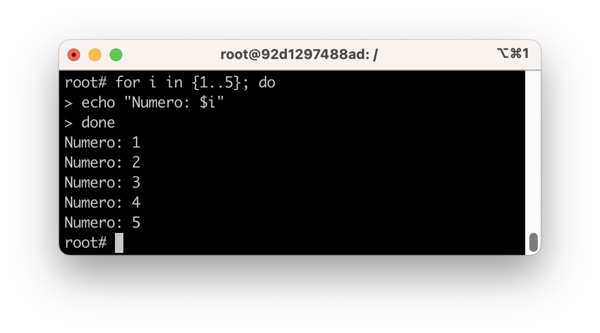
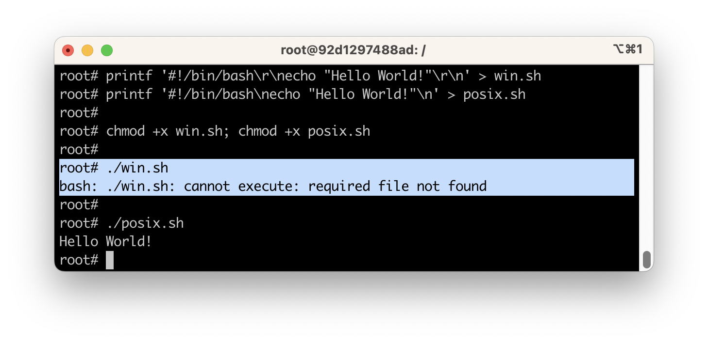
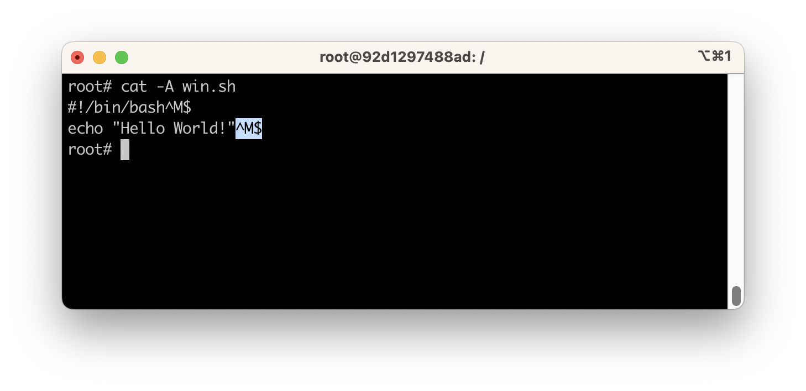

Bash 101
Perusteet
Missä ajetaan?
Docker
Jos teet skriptejä, jotka poistavat tiedostoja, asentavat ohjelmia, lisäävät käyttäviä tai tekevät jotakin muuta vaikeasti peruutettavaa, on suositeltavaa ajaa Bashiä Docker-kontissa. Docker mahdollistaa nopeasti alustettavan "clean slate"-ympäristön, jossa voit automatisoida esimerkiksi ohjelmistojen asennuksia sotkematta host-konetta. Docker ei ole kokonainen Linux-ympäristö vaan yksittäinen prosessi, joka on eristetty muusta järjestelmästä.
Multipass
Joissakin tehtävissä voi olla tarve yhtä prosessia suuremmalle Linux-ympäristölle. Tällöin käytämme Multipassin luomia koneita, jotka ovat virtuaalikoneiksi varsin kevyitä: ne voidaan luoda ja tuhota nopeasti, ja niitä voidaan kustomoida deklaratiivisilla cloud-init -tiedostoilla.
Lokaalisti
Jos sinulla on Linux tai macOS, sinulla on pääsy Bash-tulkkiin suoraan. Se sopii Hello World -kokeiluihin, mutta tee suuremmat harjoitukset silti Docker/Multipass-työkalujen avulla.
Ⓜ️ Windows
Jos olet Windows-käyttäjä, ethän yritä käyttää Git Bash -emulaattoria. Käytä suosiolla Docker-kontteja.
🍎 macOS
Huomaa, että macOS ei ole linux vaan darwin-ytimen päälle rakentuva Unix-like OS. Monet /usr/bin/-hakemiston binäärit odottavat hyvin eri flägejä kuin GNU-binäärit. Suosi Docker-kontteja myös macOS-koneella tämän kurssin yhteydessä.
Mikä Bash on?
Bash eli Bourne Again Shell on tyypillisesti Linux-distribuutioissa käytetty shell eli suomeksi komentotulkki. Bash on alkuperäisen Unixin Shell (eli sh) -tulkin jalanjäljissä kulkeva GNU Projectin vastine, kuten sen leikkisästä nimestä voi päätellä. Bash pääosin yhteensopiva Shellin kanssa.
Bash itsessään tukee ohjelmointikielistä tuttuja rakenteita, kuten muuttujia, ehtolauseita, silmukoita ja funktioita, joten se on enemmän kuin pelkkä komentotulkki. Tästä huolimatta se ei kuitenkaan ole täysiverinen ohjelmointikieli, joten monimutkaisemmat ohjelmat kannattaa kirjoittaa jollakin muulla kielellä, kuten Pythonilla tai Rubyllä - tai voit kutsua näitä Bash-skriptistä käsin. Bash on liima useiden ohjelmien välillä, ja monimutkaisimpiin operaatioihin kutsutaankin yleensä binääreitä kuten awk, sed, grep, bc ja niin edelleen.
"Bash, as a shell, is actually a 'glue' language. It helps programs to cooperate with each other, and benefits from it." - Wikibooks: Bash Shell Scripting
Jos käytät jotekin muuta tulkkia, kuten Z Shell eli zsh, voit silti kirjoittaa ja ajaa skriptit silti Bash-kielellä. Näin ne toimivat melko varmasti lähes kaikilla Linux-käyttäjillä. Tässä auttaa ns. shebang, joka on ensimmäinen rivi skriptissä. Tutustutaan siihen seuraavaksi.
Ensimmäinen kontti
Alla olevan docker container run komennon voi ajaa lähes missä tahansa komentotulkissa ja missä tahansa käyttöjärjestelmässä. Komento kutsuu käynnistää interaktiivisessa -it kontissa ajettavan ubuntu:24.04 imagen, ja kontti tuhotaan (--rm) kun poistut siitä. Alla esimerkki ajetuista komennoista. Output on esitelty >-merkillä alkavina riveinä. Huomaa, että olet kontissa vakiona käyttäjä root.
$ bash --version
GNU bash, version 5.2.21(1)-release (aarch64-unknown-linux-gnu)
Copyright (C) 2022 Free Software Foundation, Inc.
License GPLv3+: GNU GPL version 3 or later <http://gnu.org/licenses/gpl.html>
This is free software; you are free to change and redistribute it.
There is NO WARRANTY, to the extent permitted by law.
Skripti
Huomaa, että komentotulkki itsessään on jo "ohjelmointikieli", joten voit kirjoittaa ja ajaa skriptejä suoraan komentotulkissa. Skriptaus ei siis käytännössä ole mitään muuta kuin sitä, että siirrät komentoja tiedostoon ja ajat sen sijaan, että kirjoittaisit ne itse. Toki kylkiäisenä tulee muita hyötyjä, kuten mahdollisuus kommentoida koodia, jakaa sitä muille, laittaa se versionhallintaan, tarkistaa käyttäjän syöttämiä parametreja ja täten vähentää inhimillisiä virheitä, ja niin edelleen.

Kuva 1: Yksinkertainen for-loop Bashissa ilman erillistä skriptitiedostoa. Komento on ajettu kontissa. Yksinkertainen prompt johtuu aiemmin ajetusta komennosta: PS1='\u$ '.
Sisältö
Skripti on tiedosto, joka sisältää yhden tai useamman komennon. Kyseessä on siis yhä sama komentotulkki, mutta interaktiivisen promptin sijaan komentotulkki lukee komentoja tiedostosta. Tiedosto voi olla mikä tahansa, mutta yleensä se on .sh-päätteinen.
Ajaminen
Tiedoston voi ajaa monella tavalla. Yksi tapa on tehdä tiedostosta executable ja sitten ajaa se antamalla relatiivinen tai absoluuttinen polku tiedostoon tai siirtämällä se hakemistoon, joka on määritelty PATH-muuttujassa. Tämän pitäisi olla kertausta Linux Perusteet -kurssilta.
# Tee ajettavaksi
chmod +x hello.sh
# Relatiivinen polku
./hello.sh
# Absoluuttinen polku
/home/user/hello.sh
# Bashin argumenttina
bash hello.sh
# Polku, joka on PATH-muuttujassa
mv hello.sh /usr/local/bin/
hello.sh
Tiedosto on tavallinen tekstitiedosto, joten sen voi luoda millä tahansa tekstinkäsittelyohjelmalla. Suosittelen kuitenkin luomaan tiedostot joko Linuxista käsin, tai sitten host-tietokoneessa käyttäen esimerkiksi Visual Studio Codea, joka osaa käsitellä Unix-tyylisiä rivinvaihtoja ja UTF-8 -koodausta.

Kuva 2: Printf-komennon avulla voi kirjoittaa tiedoston siten, että \r korvautuu CR-merkillä (hex: 0x0D) ja \n korvautuu LF-merkillä (hex: 0x0A). Kuvassa on luotu kaksi tiedostoa, win.sh ja posix.sh, joista ensimmäisessä rivinvaihtona on CR+LF ja jälkimmäisessä LF. Huomaa, että vaikka win.sh-tiedosto on tehty ajettavaksi, komento ./win.sh valittaa, että tiedostoa ei löydy.

Kuva 3: cat-komennolla voidaan tulostaa tiedoston sisältö. Optio -A, eli --show-all, tulostaa myös non-printing merkit, kuten CR eli ^M ja LF eli $. Yhdessä näistä tulee ^M$, joka on Windows-tiedostojärjestelmän rivinvaihto. Heh, sehän muistuttaa sanaa Micro$soft!
Tehtävät
Tehtävä: Bash informaatiohaku
Muodosta itsellesi katalogi tarpeellisista lähteistä. Huomaa, että Bashin kohdalla lähteen tuoreus ei ole kovin kriittistä. Alla pari suositusta, mistä aloittaa etsintä:
- GNU Bash manual, jonka voit joko ladata PDF-formaatissa tai selata HTML-versiona.
- DevHints.io: Bash. Cheat sheet, joka sisältää lähes kaiken, mikä Bashistä pitää tietää, tiivissä paketissa.
- BashGuide - Greg's Wiki. Wiki, josta kenties parasta on FAQ-osio, josta löytyy vastaus useisiin kinkkisiin pulmiin, kuten tiedostojen ja joukkojen (engl. array) käsittelyyn.
- Bash by gh:EbookFoundation/free-programming-books. Parikymmentä Bash-tutoriaalia tai -kirjaa, joista voit valita mieleisesi. Yllä oleva BashGuide löytyy täältä PDF-muodossa - tosin FAQ pitää lukea silti online.
Myös KAMK Finnasta eli korkeakoulumme kirjastosta löytyy "Bash scripting"-hakusanoilla kirjoja. Kenties Cookbook-tyylisistä kirjoista löytyy puolivalmis ratkaisu, joka on helppo muokata omaan käyttöön?
Jos olet valmis sijoittamaan opiskeluusi rahaa, myös seuraavat lähteet voivat olla varteenotettavia:
- 💰 Humble Bundle. Sivustolla on ajoittain tarjolla kirjoja, jotka käsittelevät Bash-skriptauksen perusteita. Tarjonta vaihtelee jatkuvasti, joten on tuurista kiinni, löytyykö sieltä nyt mitään hyödyllistä. Kirjapaketit maksavat yleensä halvimmillaan noin 1-20 euroa.
- 💰 O'Reilly. Kirjastoon kuuluu useiden eri julkaisijoiden kirjoja: O'Reilly, No Starch Press, Manning Publications, Packt, Apress ja monet muut. Luettavissa kuukausimaksulla.